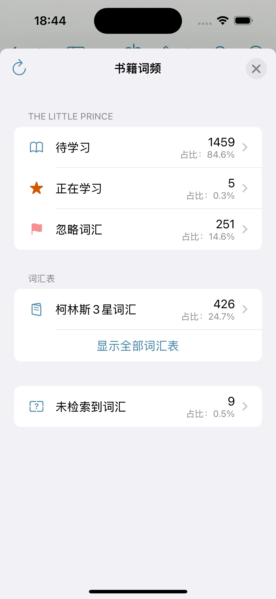
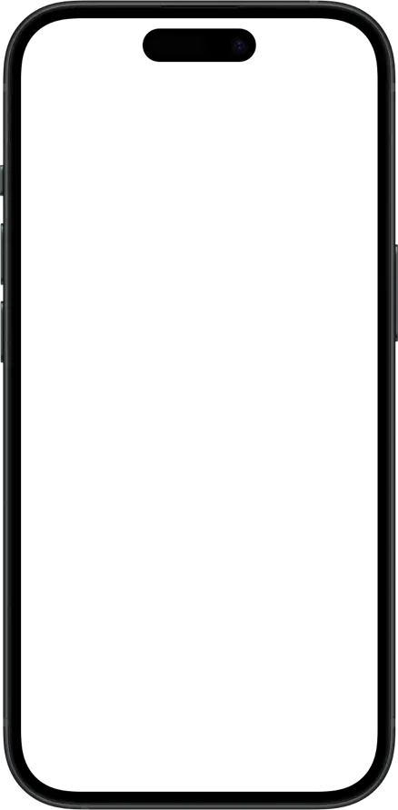
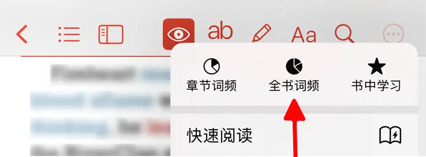

在阅读过程中，想知道书中哪些词出现得最多？哪些词是关键词？我们的词频统计功能帮助您轻松掌握书籍的核心词汇，提升阅读理解和语言学习效率。


如何开启
要分析书籍词汇，请按照以下步骤操作：
- 打开您想要阅读的电子书。
- 点击屏幕顶部菜单栏的 。若菜单栏中未显示该图标，请点击右侧的更多按钮
 ，并选择“全书词频”以分析整本书的词频，或“章节词频”分析当前章节的词频。
，并选择“全书词频”以分析整本书的词频，或“章节词频”分析当前章节的词频。

功能说明
在词频分析过程中，我们会依据以下流程将单词划分为五个类别，并统计每个类别的单词数量及其占总词汇量的比例。其中，总词汇量指这五个类别的单词总和。
flowchart TD
A[开始] --> B{是否在词典中查找到？}
B --> |是| C{是否在忽略词汇表中？}
B --> |否| D[未检索到]
C --> |是| E[已忽略]
C --> |否| F{是否标记为认识？}
F --> |是| G[已认识]
F --> |否| H{是否已加入学习？}
H --> |是| I[正在学习]
H --> |否| J[待学习]
此外，我们还会统计生词表中包含的书中单词数，并计算其占比，帮助用户更直观地了解生词表的词汇覆盖情况。
单词分类说明
-
待学习
词典中可查找到，且尚未被标记的单词。在此列表中，
– 点击 可将单词标记为已认识。
可将单词标记为已认识。
– 点击 可将单词加入正在学习。
– 显示单词在书中的出现次数。点击数字可查看所有包含该单词的句子。
– 单词按照出现次数进行排名。排名第 1 的单词为书中出现频率最高的单词。
– 可根据 频次、单词、排名、长度、位置 对单词进行排序，方便筛选和管理。 -
正在学习
已加入学习的单词。 -
已认识
已被标记为认识的单词。 -
已忽略
在忽略词汇表中的单词。 -
未检索到
在词典中未查找到的单词。